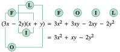

In Section A.6, we used the first law of exponents to multiply two or more monomials. In this section, we review techniques for multiplying and factoring polynomials of several terms.
SubsectionPolynomials
A polynomial is a sum of terms in which all the exponents on the variables are whole numbers and no variables appear in the denominator or under a radical. The expressions
\begin{equation*}
0.1 R^4, ~~d^2 + 32 d - 21, ~~\text{ and }~~128x^3 - 960x^2 + 8000
\end{equation*}
are all examples of polynomials in one variable.
An algebraic expression consisting of one term of the form \(cx^n\text{,}\) where \(c\) is a constant and \(n\) is a whole number, is called a monomial. For example,
\begin{equation*}
y3, ~~-3x^8, ~~\text{ and } ~~0.1R^4
\end{equation*}
are monomials. A polynomial is just a sum of one or more monomials.
A polynomial with exactly two terms, such as \(\dfrac{1}{2}n^2 + \dfrac{1}{2}n\text{,}\) is called a binomial. A polynomial with exactly three terms, such as \(d^2 + 32 d - 21\) or \(128x^3 - 960x^2 + 8000\text{,}\) is called a trinomial. We have no special names for polynomials with more than three terms.
ExampleA.47.
Which of the following expressions are polynomials?
The first three are all polynomials. In fact, (a) is a monomial, (b) is a binomial, and (c) is a trinomial. The last three are not polynomials. The variable in (d) has a negative exponent, the variable in (e) occurs in the denominator, and the variable in (f) occurs under a radical.
In a polynomial containing only one variable, the greatest exponent that appears on the variable is called the degree of the polynomial. If there is no variable at all, then the polynomial is called a constant, and the degree of a constant is zero.
This is a polynomial in the variable \(b\text{,}\) and because the greatest exponent on \(b\) is \(3\text{,}\) the degree of this polynomial is \(3\text{.}\)
This is a constant polynomial, so its degree is \(0\text{.}\) (The exponent on a constant does not affect the degree.)
This monomial has degree \(3\text{.}\)
This is a binomial of degree \(6\text{.}\)
We can evaluate a polynomial just as we evaluate any other algebraic expression: We replace the variable with a number and simplify the result.
ExampleA.49.
Let \(p(x) = -2x^2 + 3x - 1\text{.}\) Evaluate each of the following.
Products of binomials occur so frequently that it is worthwhile to learn a shortcut for this type of multiplication. We can use the following scheme to perform the multiplication mentally. (See Figure A.51.)

FigureA.51.
This process is sometimes called the FOIL method, where FOIL represents
\begin{align*}
\amp\text{the product of the} \blert{~F}\text{irst terms}\\
\amp\text{the product of the} \blert{~O}\text{uter terms}\\
\amp\text{the product of the} \blert{~I}\text{nner terms}\\
\amp\text{the product of the} \blert{~L}\text{ast terms}
\end{align*}
We sometimes find it useful to write a polynomial as a single term composed of two or more factors. This process is the reverse of multiplication and is called factoring. For example, observe that
Next, we insert the proper polynomial factor within the parentheses. This factor can be determined by inspection. We ask ourselves for monomials that, when multiplied by \(3x\text{,}\) yield \(6x^3\text{,}\)\(9x^2\text{,}\) and \(-3x\text{,}\) respectively, and obtain
and divide \(2x^2\) (the first term of the numerator) by \(x\) (the first term of the denominator) to obtain \(2x\text{.}\) (It may be helpful to write down the division: \(\dfrac{2x^2}{2x}=x\text{.}\)) We write \(\alert{2x}\) above the quotient bar as the first term of the quotient, as shown below.
Next, we multiply \(x+3\) by \(2x\) to obtain \(2x^2 + 6x\text{,}\) and subtract this product from \(2x^2 + x - 7\text{:}\)
Repeating the process, we divide \(-5x\) by \(x\) to obtain \(-5\text{.}\) We write \(\alert{-5}\) as the second term of the quotient. Then we multiply \(x+3\) by \(-5\) to obtain \(-5x - 15\text{,}\) and subtract:
Because the degree of the remainder, 8, is less than the degree of \(x + 3\text{,}\) the division is finished. The quotient is \(2x - 5\text{,}\) with a remainder of \(8\text{.}\) We write the remainder as a fraction to obtain
When using polynomial division, it helps to write the polynomials in descending powers of the variable. If the numerator is missing any terms, we can insert terms with zero coefficients so that like powers will be aligned. For example, to perform the division
we first write the numerator in descending powers as \(4x^3 + 3x - 1\text{.}\) We then insert \(0x^2\) between \(4x^3\) and \(3x\) and set up the quotient as
We then proceed as in Example A.56. You can check that the quotient is
\begin{equation*}
2x^2 + x + 2 + \frac{1}{2x-1}
\end{equation*}
SubsectionSection Summary
SubsubsectionVocabulary
Look up the definitions of new terms in the Glossary.
Polynomial
Common factor
Degree
Constant
Trinomial
Monomial
Binomial
SubsubsectionSKILLS
Practice each skill in the exercises listed.
Identify polynomials: #1–12
Evaluate polynomials: #13–20
Multiply polynomials: #21–42
Factor out a common factor: #43–68
Divide polynomials: #69–80
ExercisesExercises A.7
Exercise Group.
For Problems 1-8, identify the polynomial as a monomial, a binomial, or a trinomial. Give the degree of the polynomial.
1.
\(2x^3-x^2 \)
2.
\(x^2-2x+1\)
3.
\(5n^4\)
4.
\(3n+1\)
5.
\(3r^2-4r+2\)
6.
\(r^3\)
7.
\(y^3-2y^2-y\)
8.
\(3y^2+1\)
Exercise Group.
Which of the expressions in Problems 9-12 are not polynomials?
9.
\(\displaystyle 1-0.04t^2\)
\(\displaystyle 3x^2-4x+\dfrac{2}{x}\)
\(\displaystyle 2\sqrt{z}-7z^3+2 \)
\(\displaystyle \sqrt{2}w^3+\dfrac{3}{4}w^2-w \)
10.
\(\displaystyle \sqrt{3}p^2-7p+2 \)
\(\displaystyle 2h^{4/3}+6h^{1/3}-2 \)
\(\displaystyle \dfrac{2}{x^2-6x+5} \)
\(\displaystyle \dfrac{1}{4}y^{-2}+3y^{-1}+4 \)
11.
\(\displaystyle \dfrac{1}{m^2+3} \)
\(\displaystyle v^2-16+2^v \)
\(\displaystyle \sqrt{x^3-4x} \)
\(\displaystyle \dfrac{m^4}{12} \)
12.
\(\displaystyle 3^t-5t^3+2 \)
\(\displaystyle \dfrac{q+3}{q-1} \)
\(\displaystyle c^{1/2}-c \)
\(\displaystyle \sqrt[3]{d+1} \)
Exercise Group.
For Problems 13-20, evaluate the polynomial function for the given values of the variable.
13.
\(P(x)=x^3-3x^2+x+1 \)
\(\displaystyle x=2\)
\(\displaystyle x=-2\)
\(\displaystyle x=2b\)
14.
\(P(x)=2x^3+x^2-3x+4 \)
\(\displaystyle x=3\)
\(\displaystyle x=-3\)
\(\displaystyle x=-a\)
15.
\(Q(t)=t^2+3t+1 \)
\(\displaystyle t=\dfrac{1}{2} \)
\(\displaystyle t=-\dfrac{1}{3} \)
\(\displaystyle t=-w \)
16.
\(Q(t)=2t^2-t+1 \)
\(\displaystyle t=\dfrac{1}{4} \)
\(\displaystyle t=-\dfrac{1}{2} \)
\(\displaystyle t=3v \)
17.
\(R(z)=3z^4-2z^2+3 \)
\(\displaystyle z=1.8 \)
\(\displaystyle z=-2.6 \)
\(\displaystyle z=k-1 \)
18.
\(R(z)=z^4+4z-2 \)
\(\displaystyle z=2.1 \)
\(\displaystyle z=-3.1 \)
\(\displaystyle z=h+2 \)
19.
\(N(a)=a^6-a^5 \)
\(\displaystyle a=-1 \)
\(\displaystyle a=-2 \)
\(\displaystyle a=\dfrac{m}{3} \)
20.
\(N(a)=a^5-a^4 \)
\(\displaystyle a=-1 \)
\(\displaystyle a=-2 \)
\(\displaystyle a=\dfrac{q}{2} \)
Exercise Group.
For Problems 21-42, write the product as a polynomial and simplify.
21.
\(4y(x-2y) \)
22.
\(3x(2x+y) \)
23.
\(-6x(2x^2-x+1) \)
24.
\(-2y(y^2-3y+2) \)
25.
\(a^2b(3a^2-2ab-b) \)
26.
\(ab^3(-a^2 b^2+4ab-3) \)
27.
\(2x^2y^2(4xy^4-2xy-3x^3y^2) \)
28.
\(5x^2y^2(3x^4y^2+3x^2y-xy^6) \)
29.
\((n+2)(n+8) \)
30.
\((r-1)(r-6) \)
31.
\((r+5)(r-2) \)
32.
\((z-3)(z+5) \)
33.
\((2z+1)(z-3) \)
34.
\((3t-1)(2t+1) \)
35.
\((4r+3s)(2r-s) \)
36.
\((2z-w)(3z+5w) \)
37.
\((2x-3y)(3x-2y) \)
38.
\((3a+5b)(3a+4b) \)
39.
\((3t-4s)(3t+4s) \)
40.
\((2x-3z)(2x+3z) \)
41.
\((2a^2+b^2)(a^2-3b^2) \)
42.
\((s^2-5t^2)(3s^2+2t^2) \)
Exercise Group.
For Problems 43-60, factor completely. Check your answers by multiplying factors.
43.
\(4x^2 z+8xz \)
44.
\(3x^2y+6xy \)
45.
\(3n^4-6n^3+12n^2 \)
46.
\(2x^4-4x^2+6x \)
47.
\(15r^2s+18rs^2-3r \)
48.
\(2x^2y^2-3xy+5x^2 \)
49.
\(3m^2n^4-6m^3n^3+14m^3n^2 \)
50.
\(6x^3y-6xy^3+12x^2y^2 \)
51.
\(15a^4b^3c^4-12a^2b^2c^5+6a^2b^3c^4 \)
52.
\(14xy^4z^3+21x^2y^3z^2-28x^3y^2z^5 \)
53.
\(a(a+3)+b(a+3) \)
54.
\(b(a-2)+a(a-2) \)
55.
\(y(y-2)-3x(y-2) \)
56.
\(2x(x+3)-y(x+3) \)
57.
\(4(x-2)^2-8x(x-2)^3 \)
58.
\(6(x+1)-3x(x+1)^2 \)
59.
\(x(x-5)^2-x^2(x-5)^3 \)
60.
\(x^2(x+3)^3-x(x+3)^2 \)
Exercise Group.
For Problems 61-68, supply the missing factors or terms.